Plano alimentar em 3 faixas calóricas
Você escolhe a sua faixa e recebe o cardápio completo, com substituições para cada refeição. Comida de verdade, sem lista de proibidos.
Inscrições abertas até 22/10, às 23h59. O desafio começa em 26/10.
Musas21
Plano alimentar, treino e duas profissionais te acompanhando todos os dias. Em casa ou na academia.
R$ 79,90 à vista ou em até 3x no cartão.
Quero entrar no Musas 213x de R$ [valor da parcela] no cartão. Inscrições até 22/10, às 23h59.
Segunda-feira, dieta nova. Quarta, cansada. Sexta, desandou. Domingo, promessa de recomeçar.
Você não está sozinha. E o problema nunca foi falta de força de vontade.
É tentar fazer tudo sozinha, com plano radical e sem ninguém do lado. Dieta que exige perfeição dura três dias. O que muda o corpo é o que você consegue repetir.
O Musas 21 foi criado para quebrar esse ciclo.
Todo dia, você só precisa cuidar de quatro coisas:
Dieta. Seguir o plano na maior parte do dia.
Treino. Fazer o treino do dia ou o descanso planejado.
Água. Bater a sua meta.
Movimento. Fazer o cardio ou a meta de passos.
Cada check vale ponto. O dia completo vale bônus.
Esqueceu um? Você não perde o dia. Marca o que fez e segue.
Não precisa ser perfeito. Precisa ser sustentável.
Semana 1
Organizar a rotina, montar o prato certo, desinchar e aprender os movimentos.
Semana 2
Fim de semana, refeição fora e mais intensidade no treino. É aqui que a maioria desiste sozinha. Aqui, você tem a gente.
Semana 3
Foco em definição e em manter o ritmo depois do desafio.
Você escolhe a sua faixa e recebe o cardápio completo, com substituições para cada refeição. Comida de verdade, sem lista de proibidos.
Versão casa e versão academia, feito para iniciante, com progressão semana a semana.
Mercado, suplementação e refeição fora. Tudo o que você precisa para não sair do plano no fim de semana.
Grupo no WhatsApp com interação diária da nutricionista e da treinadora, lives semanais e mulheres começando junto com você.
Os 4 checks diários viram pontos. As Musas mais constantes são premiadas no final. [descrever a premiação escolhida]
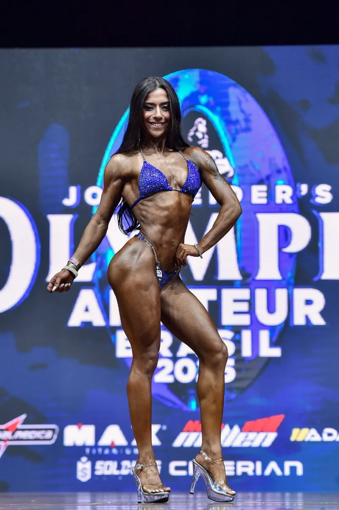
Nutricionista com atuação na nutrição esportiva e clínica, com foco em emagrecimento, recomposição corporal, saúde da mulher e comportamento alimentar.
Ex-atleta bikini, 7 vezes campeã no fisiculturismo. Sabe na prática o que é ter foco e estratégia para mudar o corpo. Hoje, ajuda mulheres comuns a chegar lá sem sofrimento e sem extremos.
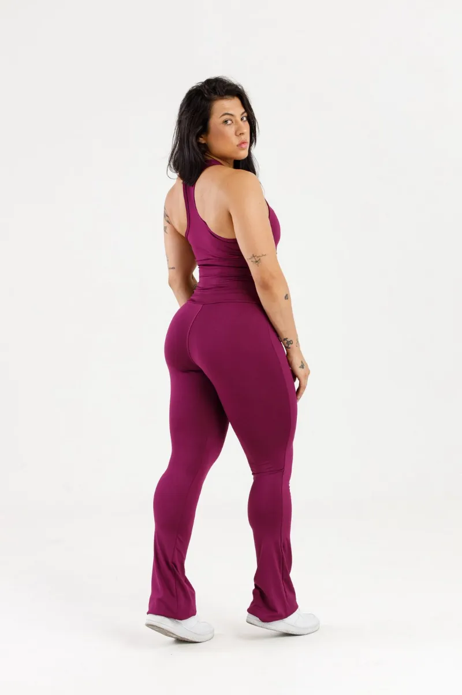
Treinadora e coach fitness. Desenvolve treinos para mulheres que querem definir o corpo e se sentir bem com ele. No Musas 21, é quem monta cada treino para caber na sua rotina, em casa ou na academia.
Juntas, criaram o Musas 21 para que você tenha, no mesmo lugar, o que comer, como treinar e alguém te acompanhando.
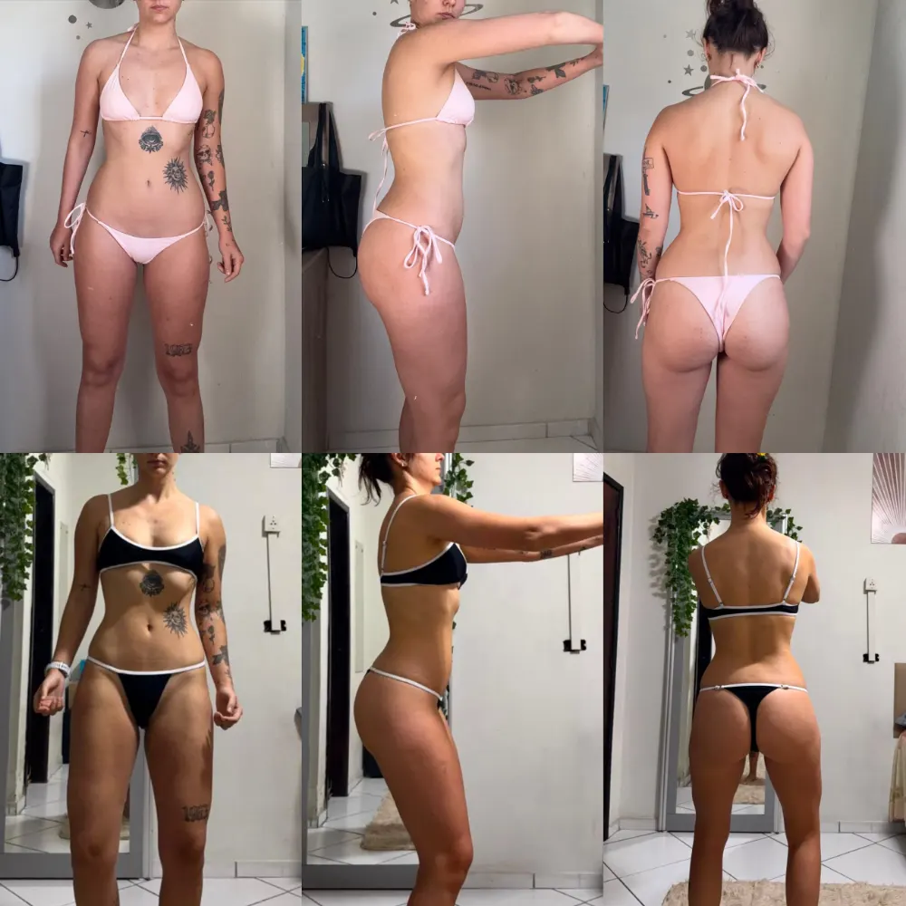
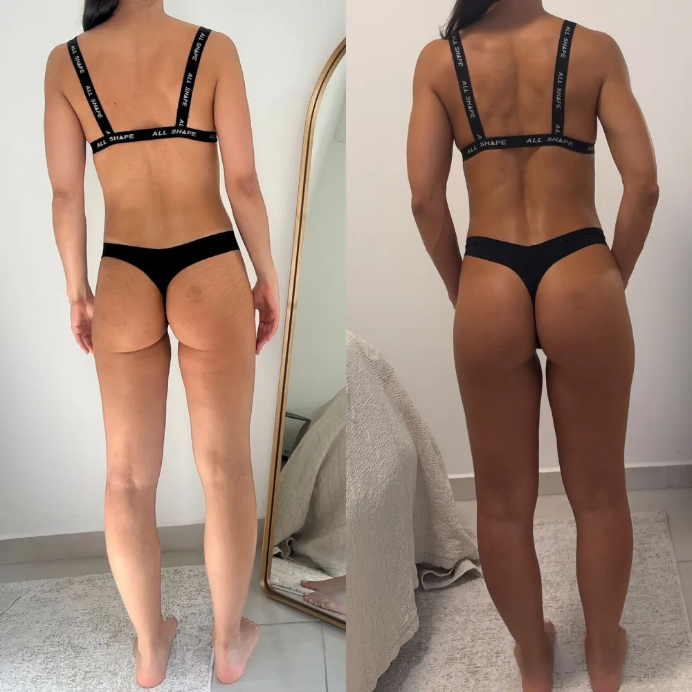
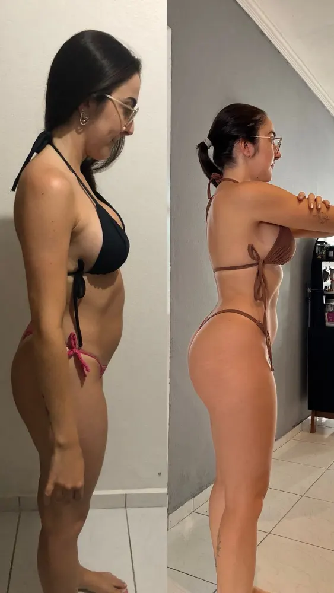
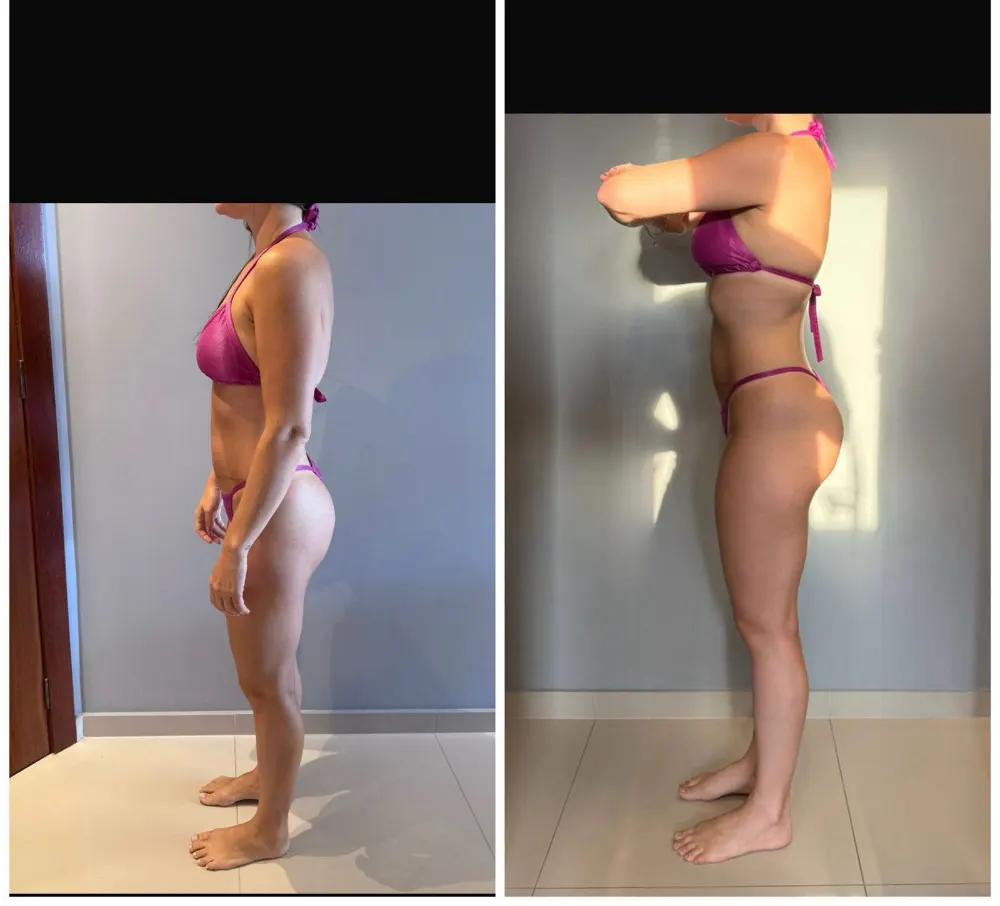
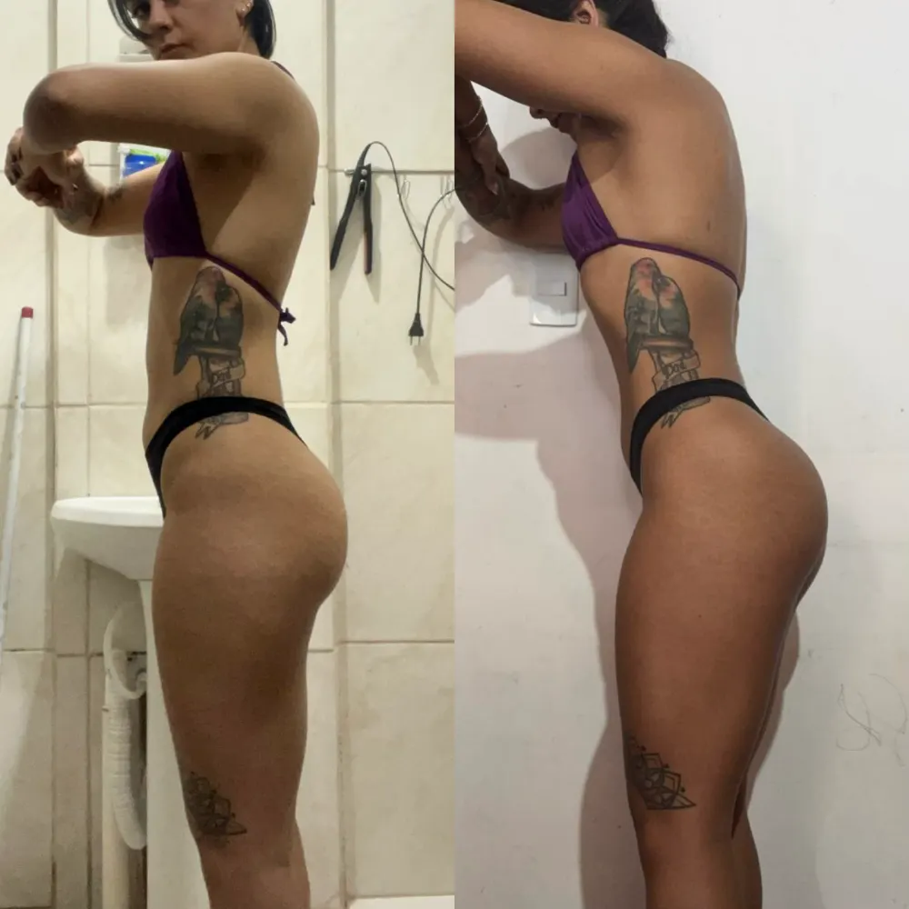
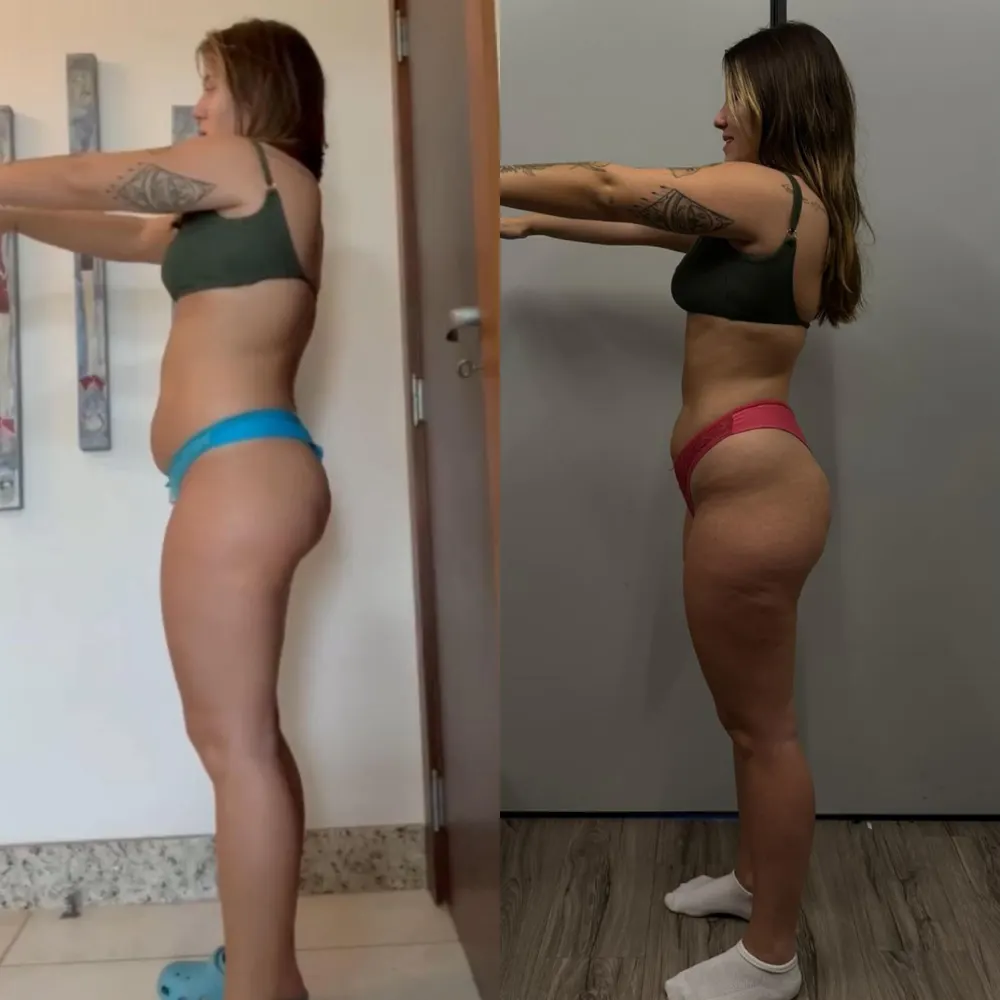
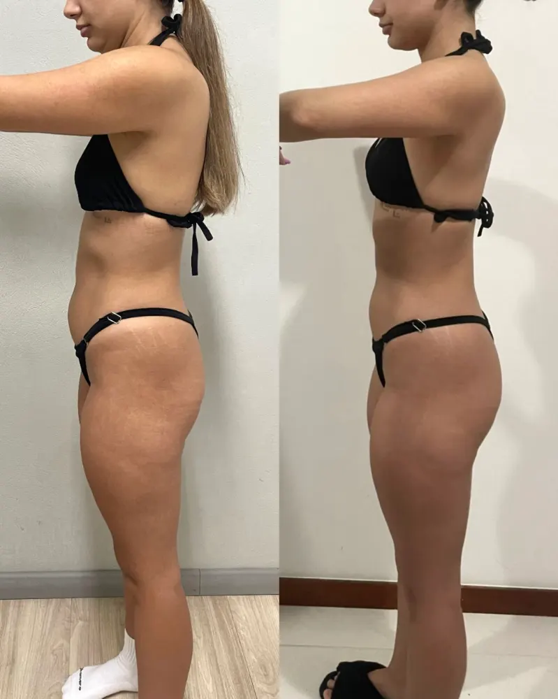
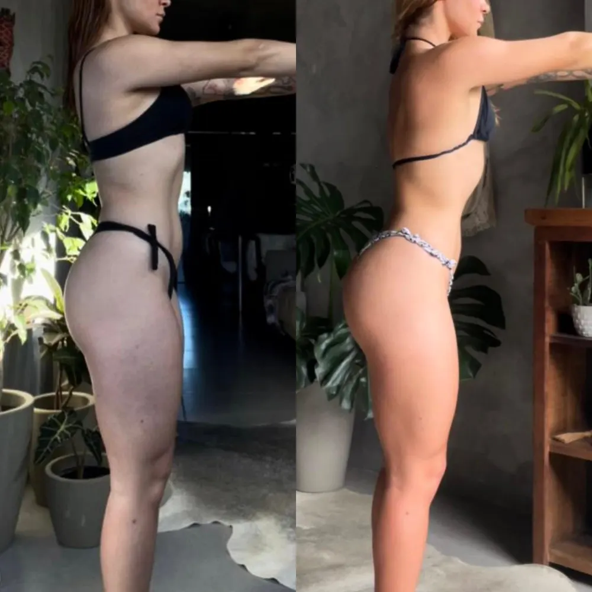
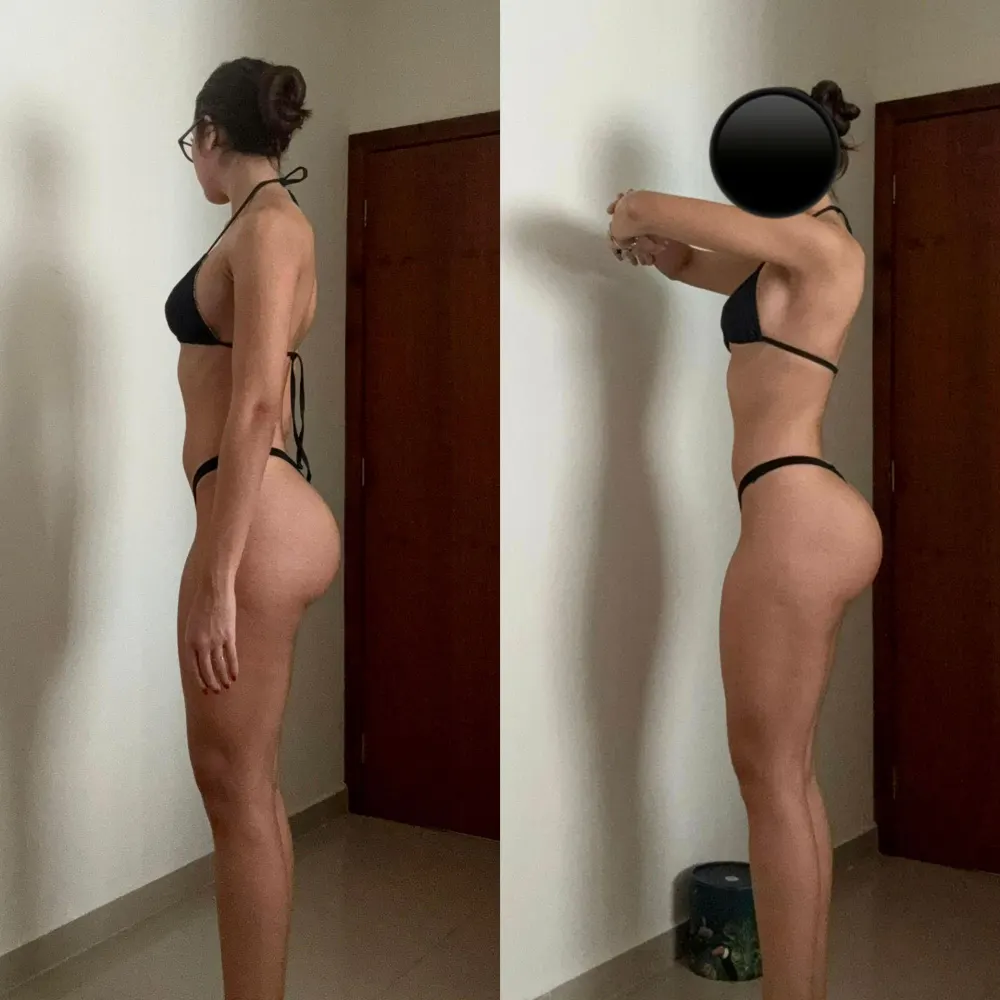
No Musas 21, você recebe plano alimentar, treino, guias e acompanhamento diário de duas profissionais durante 21 dias.
Tudo isso por R$ 79,90.
Menos de R$ 4 por dia.
Quero entrar no Musas 21Segunda-feira, 26/10. O acesso à área das alunas e à comunidade é liberado entre 23 e 25/10.
Não. Todo o treino tem versão casa e versão academia.
Sim. O protocolo foi feito para iniciante, com vídeos e progressão semana a semana.
Não. São 3 faixas calóricas, com substituições para você comer bem.
Na entrada, você responde uma triagem. Se o seu caso precisar de atenção individual, a gente te orienta.
Depois da compra, você recebe o link por e-mail.
[DEFINIR]
Você continua. No Musas 21, cada check conta.
Sim. A nutricionista e a treinadora estão na Comunidade das Musas todos os dias.
O verão vai chegar de qualquer jeito.
A diferença é se você vai chegar nele recomeçando mais uma segunda-feira, ou já no ritmo, orgulhosa do que construiu em 21 dias.
A decisão é sua. A gente cuida do resto.
Quero ser uma MusaAs inscrições fecham em 22/10, às 23h59.
Quer um plano individual, feito para a sua rotina? Conheça o acompanhamento nutricional da Rafaela.
Ver acompanhamento individual